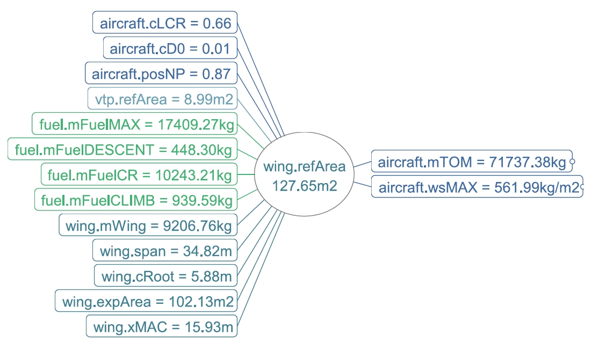

The most outstanding feature of VAMPzero is the ability to trace the call hierarchy of the calculation in the form of mind-maps. During a calculation the calc method for each parameter is called, if the parameter is not fixed. A calc method will in most cases build up dependencies to other parameters to determine the value of its parent parameter. VAMPzero traces theses dependencies in both directions and displays them as mind-maps.
Note
The mind-maps are exported as *.mm (xml) files. The visualization is made using the open-source software Freemind.
If you run VAMPzero through the graphical user interface the mind-maps will be opened automatically. You can also find them in them in the folder ./ReturnDirectory/mindMaps
You can think of these dependencies as the right and left-hand side of an equation. If you look at one of the mind-maps focus on the parameter in the middle. To calculate the value of this parameter it takes all the parameters one step to the right from this parameter. The parameters on the right are called from the parameter in the center, therefore they are named callees. To them the parameter in the middle is the caller.
The parameters to the left of the middle parameter are depending on the parameter in the middle for the calculation of their own value. They may be depending on other parameters as well. If you want to know everything about the parameters on the left just click them and a new mind-map will open with this parameter in the middle.
Let’s take a look at an example. In the above mind-map the wing’s reference area is the parameter in the middle. In this case VAMPzero has chosen to calculate the reference area (Parameter: refArea) from the maximum take-off mass (Parameter: mTOM) and the maximum wing loading (Parameter: wsMAX). Therefore the middle parameter is (exclusively) dependent on the two parameters on the right side. If you divide the maximum take-off mass by the wing loading you will see that the results should match.
All parameters on the left side, starting with the lift coefficient in the cruise segment (Parameter: cLCR) and and ending with the X-location of the mean aerodynamic chord (Parameter: xMAC), are dependent on the reference area of the wing for their calculation. They are, of course, also dependent on other parameters. If you want to examine these dependencies just click on one of the parameters.
Note
Different font types mean different status of a parameter. The following applies:
{kind=link}